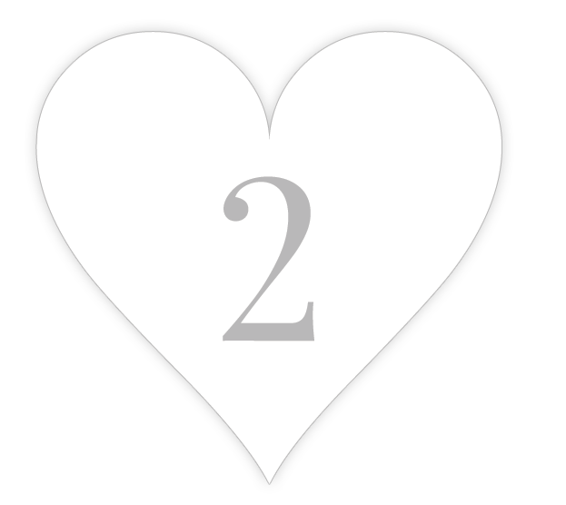
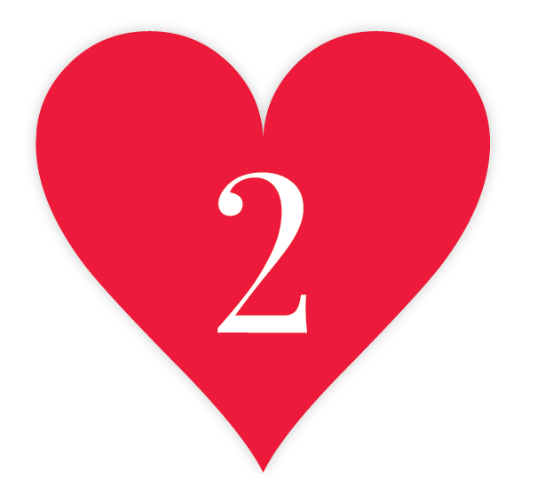
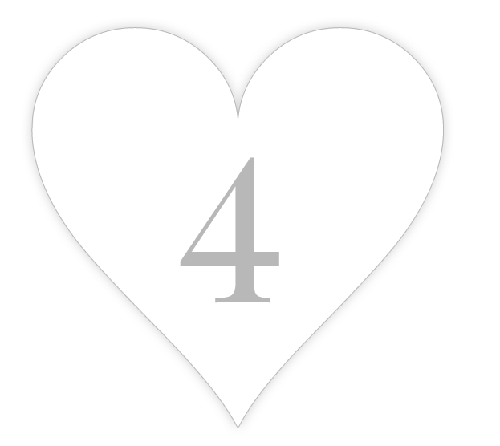
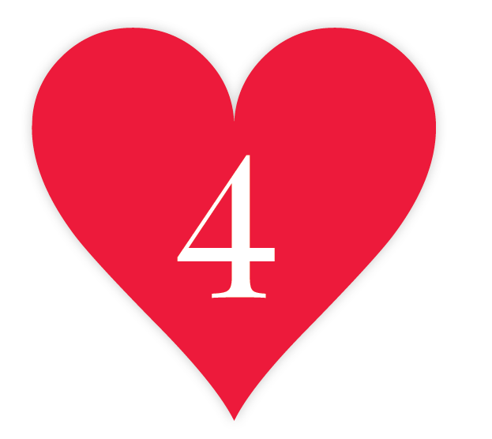

Et forklæde der giver mening
Mød Simone,
hun er frivillig ved Det Kærlige Måltid.
Simone bærer det sorte og røde tørklæde med stolthed!
Simone er frivillig ved Det Kærlige Måltid, som er en frivillig nonprofit organisation, der brænder for fællesskab, madlavning og medborgerskab. Deres mål er at udvise omsorg og støtte til familier der er ramt af akut livstruende sygdom. Hver uge står unge i køkkenet og laver sunde, velsmagende måltider, som der bringes ud til de familier, der har allermest brug for det i en hverdag, hvor krisen har taget over.
Simone har været frivillig ved Det Kærlige Måltid siden februar 2021, hvor hun startede i deres afdeling i Aalborg. Hun er for nyligt blevet forflyttet til afdelingen i Aarhus, hvor hun midlertidigt har fået titlen som frivillig koordinator. Hun har ikke været frivillig før, men efter hun blev introduceret til Det Kærlige Måltid, fik hun øjenene op for, hvor givende det kan være at blive frivillig.
… det giver mig personligt rigtig meget at vide, at man kan hjælpe med noget konkret.
Hjemme ved Simone er aftensmaden mere end bare et måltid: det er et samlingspunkt for hele familien. Et sted hvor familien på trods af en stresset og travl hverdag kan prioriterer hinanden og samles omkring middagsbordet. Derfor er Simone stolt af at være en del af Det kærlig måltid, hvor hun kan hjælpe familier med at få mere overskud i hverdagen og kunne give dem muligheden for at få hyggeligt samlingspunkt i en ellers svær tid og give dem muligheden for at samles omkring et godt og nærende måltid.
… at kunne give de sygdomsramte familier
muligheden for at samles omkring middagsbordet, tror jeg gavner rigtig meget i
en svær tid og det betyder meget for mig.
Som mange andre, ved Simone godt hvad det vil sige, at have sygdom tæt på livet. Så det at kunne hjælpe familier eller enlige, der er ramt af midlertidige livstruende sygdomme, bekræfter Simone i, at hun er det rette sted.
…Udover at kunne hjælpe sygdomsramte familier, så nyder jeg også,
at jeg hver uge bliver mødt af smil og latter i køkkenet.
At hjælpe andre er en vigtig del af hvorfor Simone er frivillig ved Det Kærlige Måltid, men det sociale aspekt fylder også en stor del. Ved Det Kærlige måltid samles de frivillige om en helt unik sag og her bliver der skabt et helt specielt fællesskab og sammenhold blandt de frivillige.
Før maden bringes ud, sidder de frivillige og skriver personlige kort til hver og én modtager. Brevene har stor affektionsværdi for både modtagerne og afsenderne.
Med brevene kan vi fortælle modtagerne, at de ikke er alene, og at der er nogen, der tænker på dem.
Fra donation til mad på bordet
5 gode grunde til at blive frivillig
Du har noget aktivt at lave, og kommer ud af døren
Du bliver ofte en del af et nyt fællesskab
 Du lærer nye kompetencer og udfordrer hjernen
Du oplever, at du er med til at gøre en forskel for andre
 
Din mentale sundhed styrkes
Som frivillig er du med til at glæde andre, som har brug for støtte og hjælp. Men frivilligheden har ikke kun stor betydning for dem du hjælper. At være frivillig giver glæde og en masse gode stunder – og studier viser, at frivillighed faktisk er med til at styrke din mentale sundhed og dit CV.
Et frivilligt arbejde med mening
Hvorfor er du frivillig ved Det Kærlige Måltid?
Jeg blev nysgerrig på frivilligt arbejde og undersøgte mere om det kærlige måltid. Jeg synes, at noget af det bedste er fællesskabet, men også bare dét at bruge min tid og mit overskud på at hjælpe andre, så de kan få det samme. Det synes jeg, er meget specielt at være med til.
Camilla / frivillig i køkkenet
Jeg havde længe ledt efter et sted at være frivillig, og det kan være svært at finde ud af, fordi der er så mange forskellige måder at være frivillig på. Her er det meget konkret, hvad man skal gøre, og man kan mærke at man hjælper andre mennesker med noget helt konkret. Det er også hyggeligt at være her, så man gør både noget godt for andre og for sig selv.
Martine / frivillig i køkkenet
Jeg valgte det primært fordi jeg har alt for meget fritid, og så er jeg også frivillig andre steder. Jeg gør det for at møde nye mennesker og skabe relationer, og så har jeg også en historie med familie, som har været ramt af kræft. Så jeg tænkte, at jeg kunne give lidt igen på den måde - og så elsker jeg at lave mad.
Timo / frivillig i køkkenet
Jeg har længe ledt efter en fritidshobby, som kunne give min hverdag mere mening. Det er dejligt at komme herover, og se at de timer, hvor man er her, gør en forskel. Jeg tænkte også, at det var et sted hvor man kunne møde søde mennesker, og det fik jeg ret i.
Helene / frivillig i køkkenet